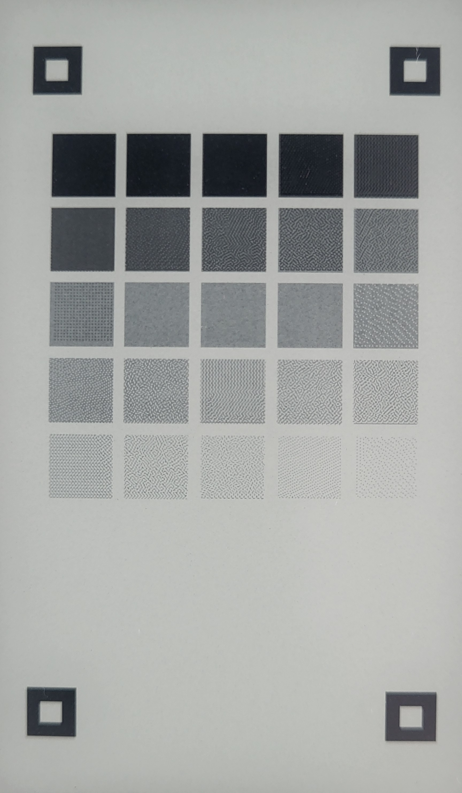
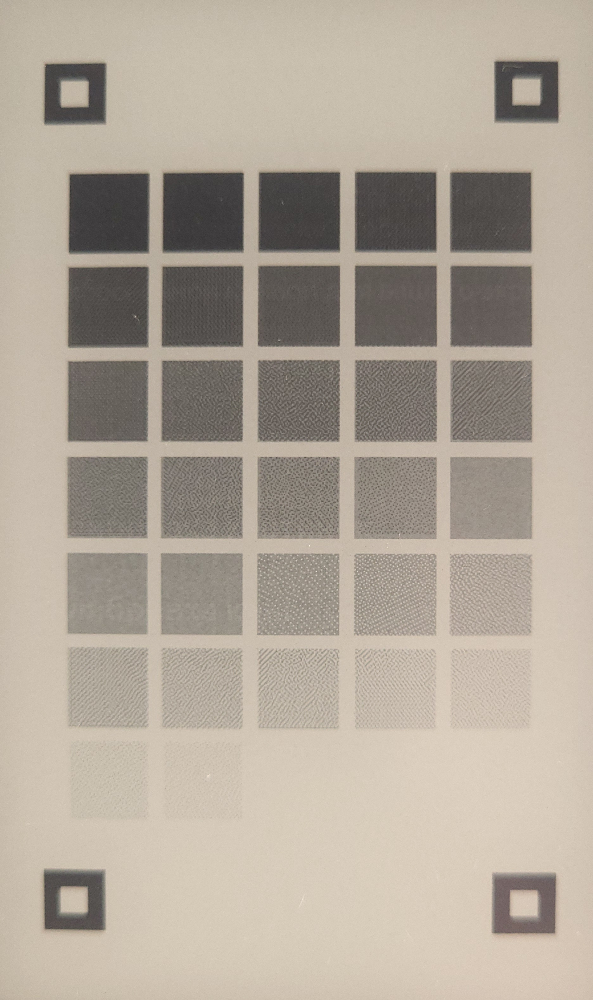
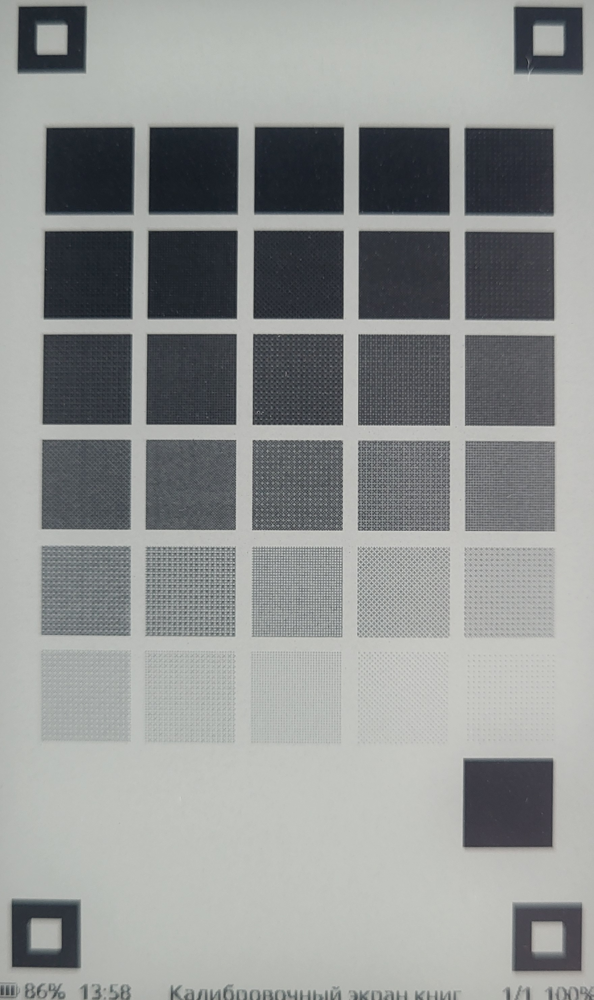
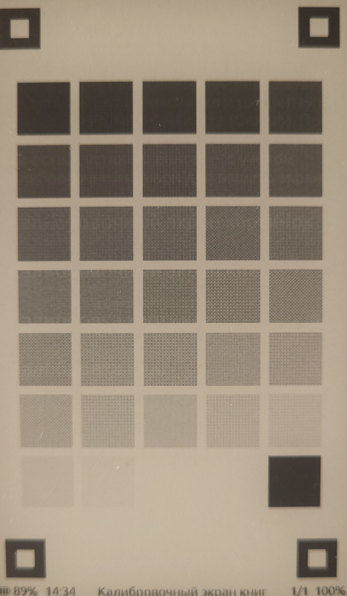
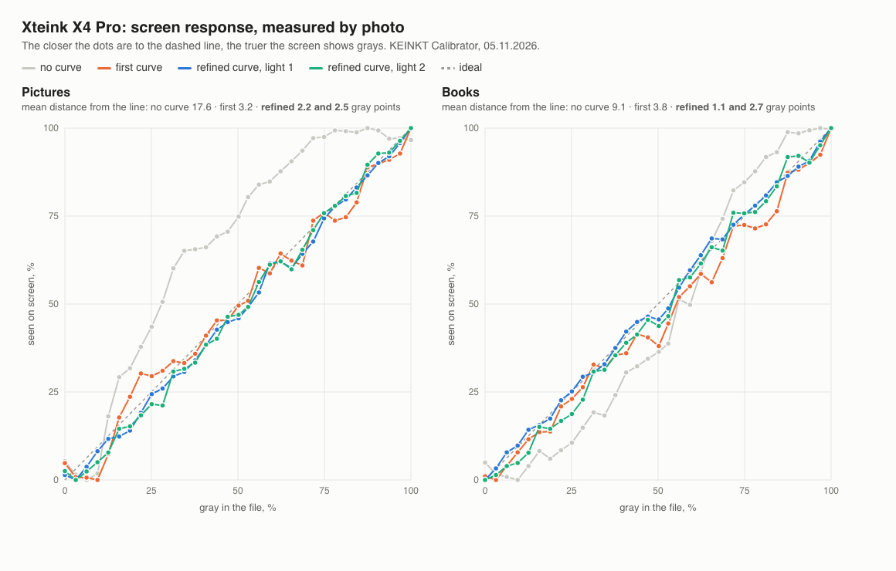

Оригинальные фотографии Николая от 5 ноября 2026 года. Только поворот и обрезка JPEG до экрана, без повторного сжатия, правки экспозиции, контраста или содержимого экрана. Освещение и экспозиция отдельных снимков различаются; измерения представлены на графике.




